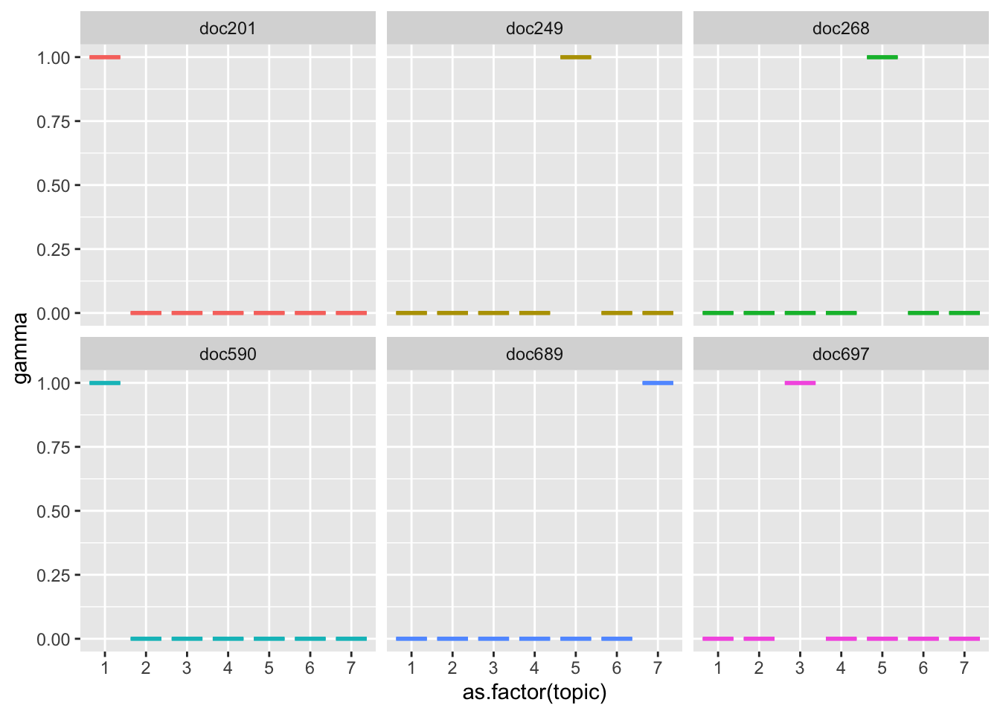

Тема 13 Тематическое моделирование
13.1 Что такое LDA
Приступая к анализу текстов (текст-майнингу), мы часто хотим разделить большую коллекцию документов на некие естественные группы. Одним из способов такого деления является тематическое моделирование.
Латентное размещение Дирихле (LDA) - особенно популярный метод для построения тематической модели. В нем каждый документ рассматривается как смесь тем, а каждая тема - как смесь слов. Это позволяет документам “перекрывать” друг друга по содержанию, а не разделяться на отдельные группы, что отражает типичное использование естественного языка. Например, мы можем представить коллекцию документов по истории искусства, в которой будут тексты о живописи, архитектуре и фотографии. Тема искусства будет представлена во всех документах, где-то может быть будет сочетание 2-3 тем сразу.

Чем-то работа LDA похожа на то, как мы размечаем текст текстовыделителями: например, в этом курсе зеленым можно выделить код, желтым – математические и статистические отступления, а розовым – окологуманитарные сюжеты. Как вы уже поняли, ключевой вопрос в том, сколько у вас текстовыделителей. При тематическом моделировании этот параметр задается вручную, и дальше мы посмотрим, как это делается.
13.2 Распределение Дирихле
Математические и статистические основания LDA достаточно хитроумны, но к счастью пользоваться моделью можно и без погружения в интегралы, как можно водить машину, не умея собрать двигатель внутреннего сгорания.
Общие принципы на русском языке хорошо изложены в статье “Как понять, о чем текст, не читая его” на сайте “Системный блок”.

Альфа и бета на этой схеме - гиперпараметры распределения. Гиперпараметры регулируют распределения тем по документам и слов по темам. Наглядно это можно представить так:

При α = 1 получается равномерное распределение: темы распределены равномерно (заметим, что α также называют “параметром концентрации”). При значениях α > 1 выборки начинают концентрироваться в центре треугольника, представляя собой равномерную смесь всех тем. При низких значениях альфа α < 1 большинство наблюдений находится в углах – скорее всего, в в этом случае в документах будет меньше смешения тем51. Распределение документов по топикам θ зависит от значения α, поскольку θ ~ Dir(α). Из θ выбирается конкретная тема Z.
Аналогичным образом гиперпараметр 𝛽 управляет распределением слов по темам. При меньших значениях 𝛽 темы, скорее всего, будут больше различаться. Распределение слов φ темы Z ~ Dir(β). Конкретное слово W выбирается уже из этого распределения.
Можно представить себе банкетный зал со столами: если их несколько, и они стоят по углам, то вероятность встретить вашего знакомого в углу выше, чем в центре зала. Если он при этом вегетарианец, вы его будете искать у стола с овощами, а не с котлетами.
Метафору можно понимать двояко. С одной стороны, ваш знакомый – это слово, а стол – тема, или топик. Он может нечаянно прибиться к столу с котлетами, как и слово “футбол” может оказаться в финансовых новостях. Но это сближение не будет таким устойчивым, как, например, связь слова “банк” с финансовым топиком.
С другой стороны, сами “документы” склонны прибиваться к определенным топикам: открыв газету, вы не ожидаете увидеть в одной статье новости вирусологии, педагогики и финансового регулирования такое бывает только в новых медиа.
13.3 Подтоговка данных
Чтобы понять возможности алгоритма, мы попробуем передать ему архив телеграм-канала Antibarbari. Мы подготовили его для анализа в одном из уроков выше; сейчас просто загружаем.
library(tidyverse)
load("./data/AntibarbariTidy.Rdata")
text_tidy <- text_tidy %>%
select(doc_id, lemma)
text_tidy## # A tibble: 73,683 × 2
## doc_id lemma
## <chr> <chr>
## 1 doc1 новый
## 2 doc1 видео
## 3 doc1 на
## 4 doc1 канал
## 5 doc1 фрагмент
## 6 doc1 семинар
## 7 doc2 подборка
## 8 doc2 видео
## 9 doc2 семинар
## 10 doc2 по
## # ℹ 73,673 more rowsДля тематического моделирования не нужны стоп-слова (которые могут быть интересны для атрибуции авторства). Удаляем их.
library(stopwords)
library(stringr)
stop <- stopwords(language = "ru", source = "stopwords-iso") %>%
as_tibble() %>%
rename(lemma = value)
text_tidy_nosw <- text_tidy %>%
anti_join(stop) %>%
filter(!str_detect(lemma, "либо")) %>%
filter(!lemma %in% c("ибо", "стр", "кр", "нить", "наверное", "например", "фиг")) %>%
filter(!str_detect(lemma, "нибудь"))## Joining with `by = join_by(lemma)`## # A tibble: 38,974 × 2
## doc_id lemma
## <chr> <chr>
## 1 doc1 видео
## 2 doc1 канал
## 3 doc1 фрагмент
## 4 doc1 семинар
## 5 doc2 подборка
## 6 doc2 видео
## 7 doc2 семинар
## 8 doc2 медленный
## 9 doc2 чтение
## 10 doc2 философия
## # ℹ 38,964 more rowsПоскольку LDA – вероятностная модель, то на входе она принимает целые числа. В самом деле, не имеет смысла говорить о том, что некое распределение породило 0.5 слов или того меньше. Поэтому мы считаем абсолютную, а не относительную встречаемость – и не tf_idf52.
## # A tibble: 6 × 3
## # Groups: doc_id, lemma [6]
## doc_id lemma n
## <chr> <chr> <int>
## 1 doc1 видео 1
## 2 doc1 канал 1
## 3 doc1 семинар 1
## 4 doc1 фрагмент 1
## 5 doc10 автор 1
## 6 doc10 вшэ 1Очень короткие слова, если они остались, скорее всего будут неинформативны, их тоже можно удалить.
text_count_nchar <- text_count %>%
mutate(nchar = nchar(lemma)) %>%
filter(nchar > 2) %>%
select(-nchar)Кроме того, малоинтересны очень короткие посты (меньше 10 слов). Их тоже удаляем.
13.4 Матрица встречаемости
Для работы с LDA в R устанавливаем пакет topicmodels. На входе нужная нам функция этого пакета принимает такую структуру данных, как document-term matrix (dtm), которая используется для хранения сильно разреженных данных и происходит из популярного пакета для текст-майнинга tm.
Поэтому “тайдифицированный” текст придется для моделирования преобразовать в этот формат, а полученный результат вернуть в опрятный формат для визуализаций53.
Для преобразования подготовленного корпуса в формат dtm воспользуемся возможностями пакета tidytext:
library(tidytext)
text_dtm <- text_count_long %>%
cast_dtm(doc_id, term = lemma, value = n)
text_dtm## <<DocumentTermMatrix (documents: 581, terms: 10207)>>
## Non-/sparse entries: 31356/5898911
## Sparsity : 99%
## Maximal term length: 25
## Weighting : term frequency (tf)Убеждаемся, что почти все ячейки в нашей матрице – нули (99% разреженность).
13.5 Число тем
Количество тем для модели всегда задается вручную. Мы не всегда заранее знаем, сколько тем в нашем корпусе, и здесь на помощь приходит функция perplexity() из topicmodels. Она показывает, насколько подогнанная модель не соответствует данным – поэтому чем значение меньше, тем лучше.
Подгоним сразу несколько моделей с разным количеством тем и посмотрим, какая из них покажет себя лучше. Выполнение кода ниже займет какое-то время.
n_topics <- c(2, 4, 8, 16, 32, 64)
text_lda_compare <- n_topics %>%
map(LDA, x = text_dtm,
control = list(seed = 0211))data_frame(k = n_topics,
perplex = map_dbl(text_lda_compare, perplexity)) %>%
ggplot(aes(k, perplex)) +
geom_point() +
geom_line() +
labs(title = "Оценка LDA модели",
subtitle = "Оптимальное количество топиков",
x = "Число топиков",
y = "Perplexity")Если верить графику, предпочтительны 64 темы (на самом деле, если подогнать еще больше моделей, то и все 200). Но спешить не стоит.
Если эксперт задаст в параметрах своей программы слишком мало тем, то разные самостоятельные топики сольются в один и станут неразличимы для взгляда исследователя. Если будет задано слишком большое число топиков, то помимо реальных тем, присутствующих в корпусе, появятся «паразитные», которые с точки зрения математического аппарата показывают совместно встречающиеся слова, однако на практике эти слова не будут образовывать тематически самостоятельных контекстов. Поэтому процесс тематического моделирования включает этап подбора нужного количества топиков и соизмерение получившихся результатов с разноплановыми соображениями.
Мои разноплановые соображения говорят, что больше 10 топиков выделять непродуктивно. Некоторые эксперименты позволяют остановиться на семи.
13.7 Слова и темы
Пакет tidytext дает возможность “тайдифицировать” объект lda с использованием разных методов. Метод β (“бета”) извлекает вероятность того, что слово происходит из данного топика.
text_topics <- tidy(text_lda, matrix = "beta")
text_topics %>%
filter(term == "огурец") %>%
arrange(-beta)## # A tibble: 7 × 3
## topic term beta
## <int> <chr> <dbl>
## 1 7 огурец 2.09e- 3
## 2 6 огурец 4.55e- 4
## 3 5 огурец 3.91e- 4
## 4 3 огурец 7.97e-286
## 5 2 огурец 7.13e-287
## 6 1 огурец 4.78e-287
## 7 4 огурец 2.44e-290Например, слово “огурец” с большей вероятностью порождено темой 1, чем остальными темами 🥒🥒🥒
Посмотрим на главные термины в топиках.
text_top_terms <- text_topics %>%
group_by(topic) %>%
arrange(-beta) %>%
slice_head(n = 12) %>%
ungroup()
head(text_top_terms)## # A tibble: 6 × 3
## topic term beta
## <int> <chr> <dbl>
## 1 1 платон 0.0320
## 2 1 цицерон 0.0224
## 3 1 аттик 0.0137
## 4 1 даймон 0.00589
## 5 1 диалог 0.00555
## 6 1 греческий 0.00549text_top_terms %>%
mutate(term = reorder(term, beta)) %>%
ggplot(aes(term, beta, fill = factor(topic))) +
geom_col(show.legend = FALSE) +
facet_wrap(~ topic, scales = "free", ncol=4) +
coord_flip()
В “огуречной” теме 1 обнаружились также “плод”, “тыква” и “мед”. Видимо, наш алгоритм вполне “узнал” плодово-овощную рубрику Ирины Макаровой, в которой она рассказывает, что и зачем выращивали древние греки и римляне. А вот “бобы” прибились к более философскому топику 4.
13.8 Сравнение топиков
Сравним топики 1 и 2 по формуле: \(log_2\left(\frac{β_2}{β_1}\right)\). Если \(β_2\) в 2 раза больше \(β_1\), то логарифм будет равен 1; если наоборот, то -1.
На всякий случай: \(\frac{1}{2} = 2^{-1}\).
Для подсчетов снова придется трансформировать данные.
beta_spread <- text_topics %>%
filter(topic %in% c(1, 2)) %>%
mutate(topic = paste0("topic_", topic)) %>%
spread(topic, beta) %>%
filter(topic_1 > .001 | topic_2 > .001) %>%
mutate(log_ratio = log2(topic_2 / topic_1))
head(beta_spread)## # A tibble: 6 × 4
## term topic_1 topic_2 log_ratio
## <chr> <dbl> <dbl> <dbl>
## 1 абарид 1.87e-293 0.00236 964.
## 2 автор 1.73e- 3 0.00387 1.17
## 3 аида 1.87e-286 0.00157 940.
## 4 академия 1.03e- 3 0.000418 -1.31
## 5 анализ 9.59e- 21 0.00148 57.1
## 6 античность 1.98e- 3 0.000726 -1.44На графике выглядит понятнее:
beta_log_ratio <- beta_spread %>%
mutate(sign = case_when(log_ratio > 0 ~ "pos",
log_ratio < 0 ~ "neg")) %>%
select(-topic_2, -topic_1) %>%
group_by(sign) %>%
arrange(desc(abs(log_ratio))) %>%
slice_head(n = 10)beta_log_ratio %>%
ggplot(aes(reorder(term, log_ratio), log_ratio, fill = sign)) +
geom_col(show.legend = FALSE) +
xlab("термин") +
ylab("log2 (beta_2 / beta_1)") +
coord_flip()
В теме 1 видим и других обитателей садов и огородов.
13.9 Темы и документы
Распределение тем по документам хранит матрица gamma.
text_documents <- tidy(text_lda, matrix = "gamma")
text_documents %>%
filter(topic == 1) %>%
arrange(-gamma)## # A tibble: 581 × 3
## document topic gamma
## <chr> <int> <dbl>
## 1 doc201 1 1.00
## 2 doc312 1 1.00
## 3 doc590 1 0.999
## 4 doc533 1 0.999
## 5 doc324 1 0.999
## 6 doc569 1 0.999
## 7 doc185 1 0.999
## 8 doc570 1 0.999
## 9 doc582 1 0.999
## 10 doc557 1 0.999
## # ℹ 571 more rowsЗначение gamma можно понимать как долю слов в документе, происходящую из данного топика. Например, тема 1 представлена в документе 268. Посмотрим на него:
doc_268 <- text_tidy %>%
filter(doc_id == "doc268") %>%
pull(lemma) %>%
paste0(collapse = " ")
paste0(substr(doc_268, 1, 279), "...")## [1] "тыква закончиться лето подходить к завершение и наш сезонный плодовый ягодный рубрика сегодня мы вспомянуть о тыква ведь грек охотно она выращивать но привычный мы тыква и тот что быть у грек и римлянин не один и тот же хотя весь они относиться к семейство тыквенный тыква с прил..."Каждый документ в рамках LDA рассматривается как собрание тем. Значит, сумма всех гамм для текста должна быть равна единице. Проверим.
## # A tibble: 1 × 1
## sum
## <dbl>
## 1 1Все верно!
Теперь отберем несколько длинных постов и посмотрим, какие топики в них представлены.
long_posts <- text_tidy %>%
group_by(doc_id) %>%
summarise(nwords = n()) %>%
arrange(-nwords) %>%
slice_head(n = 6) %>%
pull(doc_id)
long_posts## [1] "doc689" "doc201" "doc590" "doc249" "doc268" "doc697"text_documents %>%
filter(document %in% long_posts) %>%
arrange(-gamma) %>%
ggplot(aes(as.factor(topic), gamma, color = document)) +
geom_boxplot(show.legend = F) +
facet_wrap(~document)
13.10 Распределения вероятности для топиков
text_documents %>%
ggplot(aes(gamma, fill = as.factor(topic))) +
geom_histogram(show.legend = F) +
facet_wrap(~ topic, ncol = 4) +
scale_y_log10() +
labs(title = "Распределение вероятностей для каждого топика",
y = "Число документов",
x = expression(gamma))
Почти ни одна тема не распределена равномерно: гамма чаще всего принимает значения либо около нуля, либо в районе единицы. Тема 2, однако, отклоняется от этого правила.
## # A tibble: 12 × 3
## topic term beta
## <int> <chr> <dbl>
## 1 2 платон 0.00734
## 2 2 текст 0.00644
## 3 2 понедельник 0.00574
## 4 2 аристотель 0.00538
## 5 2 цифровой 0.00498
## 6 2 пифагор 0.00462
## 7 2 статья 0.00426
## 8 2 бог 0.00426
## 9 2 модуль 0.00393
## 10 2 автор 0.00387
## 11 2 видео 0.00387
## 12 2 древний 0.00346Действительно, здесь встречаются слова, связанные с изучением античности в целом и потому возможные в разных контекстах. Можно сказать, что это своего рода метатопик, характеризующий тематику канала в целом.
13.11 Интерактивные визуализации
Более подробно изучить полученную модель можно при помощи интерактивной визуализации. Функция ниже заимстовована отсюда.
topicmodels2LDAvis <- function(x, ...){
post <- topicmodels::posterior(x)
if (ncol(post[["topics"]]) < 3) stop("The model must contain > 2 topics")
mat <- x@wordassignments
LDAvis::createJSON(
phi = post[["terms"]],
theta = post[["topics"]],
vocab = colnames(post[["terms"]]),
doc.length = slam::row_sums(mat, na.rm = TRUE),
term.frequency = slam::col_sums(mat, na.rm = TRUE)
)
}Свежую верию пакета LDAvis надо устанавливать из репозитория.
Ссылка на интерактивную визуализацию топиков.
Об этом приложении см. здесь.
Значения лямбды, очень близкие к нулю, показывают термины, наиболее специфичные для выбранной темы. Это означает, что вы увидите термины, которые “важны” для данной конкретной темы, но не обязательно “важны” для всего корпуса.
Значения лямбды, близкие к единице, показывают те термины, которые имеют наибольшее соотношение между частотой терминов по данной теме и общей частотой терминов из корпуса54.
Сами разработчики советуют выставлять значение лямбды в районе 0.6.
https://www.mithilaguha.com/post/topic-modeling-and-latent-dirichlet-allocation↩︎
https://datascience.stackexchange.com/questions/21950/why-we-should-not-feed-lda-with-tfidf/49704#49704?newreg=c17592380de141cf9064c9c5ef09cdc6↩︎
https://stackoverflow.com/questions/50726713/meaning-of-bar-width-for-pyldavis-for-lambda-0↩︎